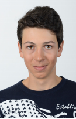

 La Manifestation « Unite the Right » à Charlottesville est une série de rassemblements de l'extrême droite américaine organisée en 2017 à Charlottesville en Virginie (États-Unis), les 11 et 12 août 2017, pour protester contre le retrait de la statue de Robert Lee, monument hautement symbolique célébrant les États confédérés pendant la guerre de sécession. Ces défilés rassemblent des suprémacistes blancs, des nationalistes blancs, des membres de l'« alt-right », des néonazis et des miliciens, et attirent l'attention internationale du fait des violences qu'ils engendrent. Parmi les personnalités attendues se trouvent Baked Alaska (en) , Augustus Invictus, David Duke, Richard Spencer, Mike Enoch (en), et le fondateur de la Ligue du Sud Michael Hill. Des contre-manifestants affiliés à des mouvements antiracistes, militants afro-américains et anti-fascistes sont également présents. De nombreuses violences et heurts entre manifestants et contre-manifestants ont lieu, dont une attaque à la voiture-bélier1 conduite par un suprémaciste blanc qui provoque la mort d'une contre-manifestante antiraciste2 et fait 19 blessés. Le même jour, un hélicoptère de police surveillant le rassemblement s'écrase accidentellement, tuant les deux policiers à bord.La Manifestation « Unite the Right » à Charlottesville est une série de rassemblements de l'extrême droite américaine organisée en 2017 à Charlottesville en Virginie (États-Unis), les 11 et 12 août 2017, pour protester contre le retrait de la statue de Robert Lee, monument hautement symbolique célébrant les États confédérés pendant la guerre de sécession. Ces défilés rassemblent des suprémacistes blancs, des nationalistes blancs, des membres de l'« alt-right », des néonazis et des miliciens, et attirent l'attention internationale du fait des violences qu'ils engendrent. Parmi les personnalités attendues se trouvent Baked Alaska (en) , Augustus Invictus, David Duke, Richard Spencer, Mike Enoch (en), et le fondateur de la Ligue du Sud Michael Hill. Des contre-manifestants affiliés à des mouvements antiracistes, militants afro-américains et anti-fascistes sont également présents. De nombreuses violences et heurts entre manifestants et contre-manifestants ont lieu, dont une attaque à la voiture-bélier1 conduite par un suprémaciste blanc qui provoque la mort d'une contre-manifestante antiraciste2 et fait 19 blessés. Le même jour, un hélicoptère de police surveillant le rassemblement s'écrase accidentellement, tuant les deux policiers à bord.
des néonazis et des miliciens, et attirent l'attention internationale du fait des violences qu'ils engendrent. Parmi les personnalités attendues se trouvent Baked Alaska (en) , Augustus Invictus, David Duke, Richard Spencer, Mike Enoch (en), et le fondateur de la Ligue du Sud Michael Hill. Des contre-manifestants affiliés à des mouvements antiracistes, militants afro-américains et anti-fascistes sont également présents. De nombreuses violences et heurts entre manifestants et contre-manifestants ont lieu, dont une attaque à la voiture-bélier1 conduite par un suprémaciste blanc qui provoque la mort d'une contre-manifestante antiraciste2 et fait 19 blessés. Le même jour, un hélicoptère de police surveillant le rassemblement s'écrase accidentellement, tuant les deux policiers à bord.La Manifestation « Unite the Right » à Charlottesville est une série de rassemblements de l'extrême droite américaine organisée en 2017 à Charlottesville en Virginie (États-Unis), les 11 et 12 août 2017, pour protester contre le retrait de la statue de Robert Lee, monument hautement symbolique célébrant les États confédérés pendant la guerre de sécession. Ces défilés rassemblent des suprémacistes blancs, des nationalistes blancs, des membres de l'« alt-right », des néonazis et des miliciens, et attirent l'attention internationale du fait des violences qu'ils engendrent. Parmi les personnalités attendues se trouvent Baked Alaska (en) , Augustus Invictus, David Duke, Richard Spencer, Mike Enoch (en), et le fondateur de la Ligue du Sud Michael Hill. Des contre-manifestants affiliés à des mouvements antiracistes, militants afro-américains et anti-fascistes sont également présents. De nombreuses violences et heurts entre manifestants et contre-manifestants ont lieu, dont une attaque à la voiture-bélier1 conduite par un suprémaciste blanc qui provoque la mort d'une contre-manifestante antiraciste2 et fait 19 blessés. Le même jour, un hélicoptère de police surveillant le rassemblement s'écrase accidentellement, tuant les deux policiers à bord.
La Manifestation « Unite the Right » à Charlottesville est une série de rassemblements de l'extrême droite américaine organisée en 2017 à Charlottesville en Virginie (États-Unis), les 11 et 12 août 2017, pour protester contre le retrait de la statue de Robert Lee, monument hautement symbolique célébrant les États confédérés pendant la guerre de sécession. Ces défilés rassemblent des suprémacistes blancs, des nationalistes blancs, des membres de l'« alt-right », des néonazis et des miliciens, et attirent l'attention internationale du fait des violences qu'ils engendrent. Parmi les personnalités attendues se trouvent Baked Alaska (en) , Augustus Invictus, David Duke, Richard Spencer, Mike Enoch (en), et le fondateur de la Ligue du Sud Michael Hill. Des contre-manifestants affiliés à des mouvements antiracistes, militants afro-américains et anti-fascistes sont également présents. De nombreuses violences et heurts entre manifestants et contre-manifestants ont lieu, dont une attaque à la voiture-bélier1 conduite par un suprémaciste blanc qui provoque la mort d'une contre-manifestante antiraciste2 et fait 19 blessés. Le même jour, un hélicoptère de police surveillant le rassemblement s'écrase accidentellement, tuant les deux policiers à bord.La Manifestation « Unite the Right » à Charlottesville est une série de rassemblements de l'extrême droite américaine organisée en 2017 à Charlottesville en Virginie (États-Unis), les 11 et 12 août 2017, pour protester contre le retrait de la statue de Robert Lee, monument hautement symbolique célébrant les États confédérés pendant la guerre de sécession. Ces défilés rassemblent des suprémacistes blancs, des nationalistes blancs, des membres de l'« alt-right », des néonazis et des miliciens, et attirent l'attention internationale du fait des violences qu'ils engendrent. Parmi les personnalités attendues se trouvent Baked Alaska (en) , Augustus Invictus, David Duke, Richard Spencer, Mike Enoch (en), et le fondateur de la Ligue du Sud Michael Hill. Des contre-manifestants affiliés à des mouvements antiracistes, militants afro-américains et anti-fascistes sont également présents. De nombreuses violences et heurts entre manifestants et contre-manifestants ont lieu, dont une attaque à la voiture-bélier1 conduite par un suprémaciste blanc qui provoque la mort d'une contre-manifestante antiraciste2 et fait 19 blessés. Le même jour, un hélicoptère de police surveillant le rassemblement s'écrase accidentellement, tuant les deux policiers à bord.La Manifestation « Unite the Right » à Charlottesville est une série de rassemblements de l'extrême droite américaine organisée en 2017 à Charlottesville en Virginie (États-Unis), les 11 et 12 août 2017, pour protester contre le retrait de la statue de Robert Lee, monument hautement symbolique célébrant les États confédérés pendant la guerre de sécession. Ces défilés rassemblent des suprémacistes blancs, des nationalistes blancs, des membres de l'« alt-right », des néonazis et des miliciens, et attirent l'attention internationale du fait des violences qu'ils engendrent. Parmi les personnalités attendues se trouvent Baked Alaska (en) , Augustus Invictus, David Duke, Richard Spencer, Mike Enoch (en), et le fondateur de la Ligue du Sud Michael Hill. Des contre-manifestants affiliés à des mouvements antiracistes, militants afro-américains et anti-fascistes sont également présents. De nombreuses violences et heurts entre manifestants et contre-manifestants ont lieu, dont une attaque à la voiture-bélier1 conduite par un suprémaciste blanc qui provoque la mort d'une contre-manifestante antiraciste2 et fait 19 blessés. Le même jour, un hélicoptère de police surveillant le rassemblement s'écrase accidentellement, tuant les deux policiers à bord.
envoye moi un mail ici